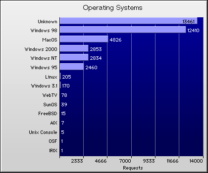

|  |  |
 | |
(15) Operating Systems |
||||||||
|---|---|---|---|---|---|---|---|---|
| Requests | % | Bytes | % | Visitors | Pages | Errors | System | |
| 13,461 | 32.3% | 138.9M | 18.9% | 1,439 | 13,374 | 1,308 | Unknown | |
| 12,410 | 29.8% | 299.7M | 40.9% | 8,883 | 12,122 | 56 | Windows 98 | |
| 4,826 | 11.6% | 67.6M | 9.2% | 2,236 | 4,757 | 2 | MacOS | |
| 2,853 | 6.8% | 72.0M | 9.8% | 2,001 | 2,801 | 19 | Windows 2000 | |
| 2,834 | 6.8% | 60.4M | 8.2% | 1,686 | 2,781 | 7 | Windows NT | |
| 2,460 | 5.9% | 56.6M | 7.7% | 1,277 | 2,409 | 15 | Windows 95 | |
| 205 | 0.5% | 6.6M | 0.9% | 92 | 201 | 2 | Linux | |
| 170 | 0.4% | 2.5M | 0.3% | 80 | 168 | 2 | Windows 3.1 | |
| 78 | 0.2% | 904.3K | 0.1% | 44 | 77 | 0 | WebTV | |
| 39 | 0.1% | 550.1K | 0.1% | 23 | 39 | 0 | SunOS | |
| 15 | 0.0% | 1.5M | 0.2% | 6 | 15 | 0 | FreeBSD | |
| 7 | 0.0% | 84.3K | 0.0% | 2 | 5 | 0 | AIX | |
| 5 | 0.0% | 133.8K | 0.0% | 8 | 5 | 0 | Unix Console | |
| 1 | 0.0% | 119.4K | 0.0% | 2 | 1 | 0 | OSF | |
| 1 | 0.0% | 60.9K | 0.0% | 2 | 1 | 0 | IRIX | |
| 2,624 | 6.3% | 47.2M | 6.4% | 1,185 | 2,583 | 97 | Average | |
| 39,365 | 94.4% | 707.5M | 96.4% | 17,781 | 38,756 | 1,456 | Totals | |
Copyright © Active Concepts, 1997-99